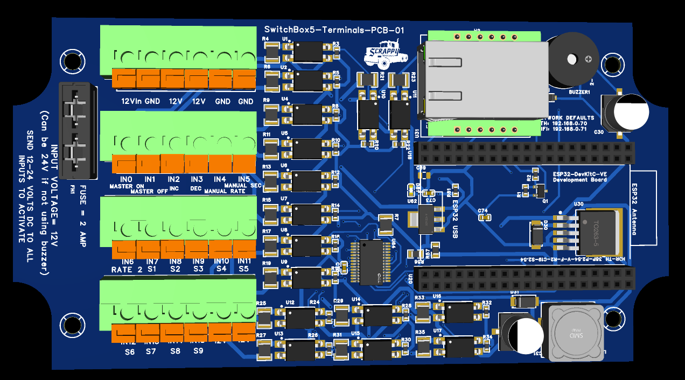
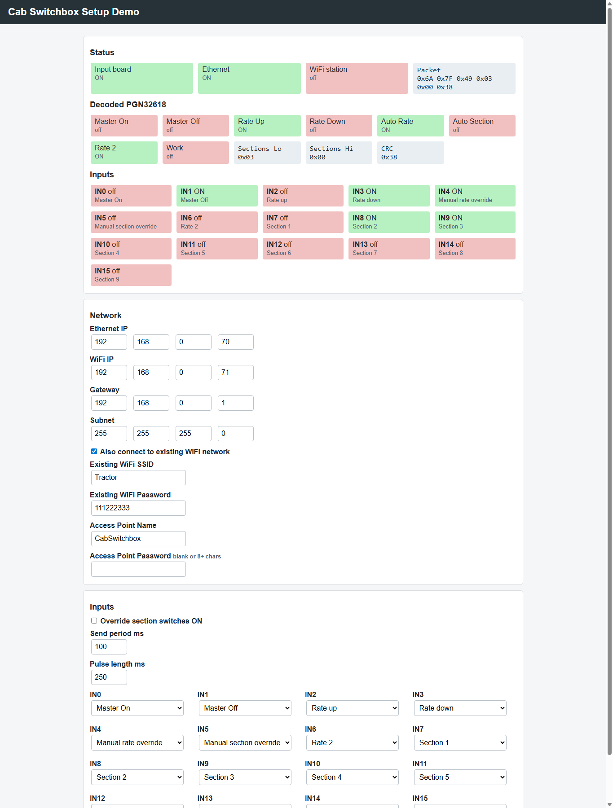
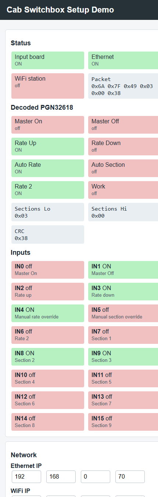

Last updated: June 19, 2026
Hardware shown in this manual: SwitchBox5-Terminals-PCB-01 (Rev 01).
The ESP32 Cab Switchbox is a network switch input module for the rate controller system. It reads up to 16 cab switch inputs, converts them into the switchbox packet used by the rate controller, and sends that packet over UDP by Ethernet and WiFi.
The switchbox is intended for cab controls such as:
The current firmware is in:
ESP32_Cab_Switchbox/ESP32_Cab_Switchbox.ino
The switchbox starts its own WiFi access point and can also use Ethernet.
Default settings:
| Item | Default |
|---|---|
| Access point name | CabSwitchbox-XXXX |
| Access point password | blank / open network |
| WiFi setup IP | 192.168.0.71 |
| Ethernet IP | 192.168.0.70 |
| Gateway | 192.168.0.1 |
| Subnet | 255.255.255.0 |
| Web page port | 80 |
| mDNS name | cabswitchbox.local |
| UDP send port | 29999 |
| Local UDP port | 28888 |
The SwitchBox5 Rev 01 terminal PCB needs these additional parts installed before use:
| Part | Notes |
|---|---|
| 2 amp mini fuse | Installs in the fuse holder. Protects the input/switch-feed circuit. |
| ESP32-DEVKitC-VE | Main controller board. Install in the ESP32 header sockets. |
| W5500 Ethernet Module | Ethernet network module. Install in the W5500 module header. |
Hammond E1555K2GY enclosure | Polycarbonate NEMA 4X enclosure, 6.3 x 3.5 x 3.5 inches. The SwitchBox5 PCB fits this enclosure. |
The SwitchBox5 PCB fits the Hammond Manufacturing E1555K2GY
polycarbonate enclosure:
| Item | Specification |
|---|---|
| Manufacturer | Hammond Manufacturing |
| Part number | E1555K2GY |
| Outside size | 6.3 x 3.5 x 3.5 inches |
| Protection rating | NEMA 4X |
| Material | Polycarbonate |
Plan cable glands, Ethernet access, switch wiring, and board mounting before
drilling the enclosure. Keep the lid sealing surface clear of wiring and
hardware so the NEMA 4X seal is maintained.

Power the board from the input power terminals:
The upper six-position terminal block on Rev 01 is ordered left to right:
| Position | Terminal | Use |
|---|---|---|
| 1 | 12Vin | Connect to supply +12-24 VDC. |
| 2 | GND | Connect to supply negative / ground. |
| 3 | 12V | Fused +12-24 VDC output for switch feeds. |
| 4 | 12V | Fused +12-24 VDC output for switch feeds. |
| 5 | GND | Ground return terminal. |
| 6 | GND | Ground return terminal. |
The 12V terminals are fused outputs from the board input power. Use these fused 12V terminals to feed the operator switches, then return the switched voltage to the desired INx input.
Typical wiring:
Supply +12-24 VDC -------- 12Vin
Supply negative ---------- GND
Fused 12V terminal ------- switch ------- INx
The Rev 01 input power fuse is 2 amps. The fused 12V terminals are intended for feeding switch inputs, not for powering heavy loads.
The PCB electronics and switch inputs can operate from 12-24 VDC. However,
the buzzer is a **12 V board-mounted component connected directly to input
power**. The buzzer will only operate correctly when the board is powered from
12 VDC. Do not expect buzzer operation with a 24 V supply, and do not apply
24 V to the installed 12 V buzzer.
The four six-position terminal blocks are ordered as follows:
| Block | Left-to-right terminal order |
|---|---|
| Power | 12Vin, GND, 12V, 12V, GND, GND |
| Inputs 0-5 | IN0, IN1, IN2, IN3, IN4, IN5 |
| Inputs 6-11 | IN6, IN7, IN8, IN9, IN10, IN11 |
| Inputs 12-15 / switch feed | IN12, IN13, IN14, IN15, 12V, 12V |
The Rev 01 silkscreen also identifies the default functions below the input
terminals: master on/off, rate increase/decrease, manual rate, manual section,
Rate 2, and sections S1 through S9.
CabSwitchbox.
http://192.168.0.71/
If mDNS is working on the device you are using, this may also work:
http://cabswitchbox.local/
http://192.168.0.70/
If needed, first connect by WiFi and change the Ethernet IP address to match the network you are using.


The setup page has a live status area and a configuration form. After changing settings, click Save and restart. The switchbox saves the settings to EEPROM and restarts.
The status area shows:
| Status item | Meaning |
|---|---|
| Input board | The switch input board is detected and ready. |
| Ethernet | Ethernet hardware is detected and the link is up. |
| WiFi station | The switchbox is connected to an existing WiFi network. |
| Buzzer | The GPIO27 buzzer output is currently on. |
| Alarm packet | A recent alarm packet has been received from Rate Controller. |
| Alarm active | Rate Controller is requesting the cab buzzer. |
| Packet | The six-byte packet being sent to the rate controller. |
| Decoded PGN32618 | Human-readable state of the outgoing switchbox packet. |
| Inputs | Live state and assigned action for each input IN0 through IN15. |
| Setting | Description |
|---|---|
| Ethernet IP | Static IP used by the Ethernet interface. |
| WiFi IP | IP used by the switchbox access point. |
| Gateway | Gateway used for Ethernet and station WiFi. |
| Subnet | Subnet mask. |
| Also connect to existing WiFi network | Enables WiFi station mode in addition to the switchbox access point. |
| Existing WiFi SSID | Name of the WiFi network the switchbox should join. |
| Existing WiFi Password | Password for the existing WiFi network. |
| Access Point Name | Name of the WiFi network created by the switchbox. |
| Access Point Password | Password for the switchbox access point. Leave blank for open WiFi, or use 8 or more characters. |
| Setting | Default | Description |
|---|---|---|
| Override section switches ON | Off | Forces mapped section switch inputs ON without jumpers. Use this when section switches are not installed. |
| Send period ms | 100 | How often the switchbox packet is sent. Valid range is 50 to 1000 ms. |
| Pulse length ms | 250 | Length of master and rate pulses. Valid range is 50 to 1000 ms. |
| IN0-IN15 action | See table below | Assigns what each physical input does. |
| Setting | Default | Description |
|---|---|---|
| Buzzer level | Reduced | Select Off, Reduced, or Full for the board buzzer. |
| Test buzzer | n/a | Sounds the buzzer for two seconds without changing saved settings. |
Factory/default input assignments:
| Input | Default action | Typical wiring |
|---|---|---|
| IN0 | Master on | Momentary switch feeding +12-24 VDC to IN0 |
| IN1 | Master off | Momentary switch feeding +12-24 VDC to IN1 |
| IN2 | Rate up | Momentary switch feeding +12-24 VDC to IN2 |
| IN3 | Rate down | Momentary switch feeding +12-24 VDC to IN3 |
| IN4 | Manual rate override | Toggle switch feeding +12-24 VDC to IN4 |
| IN5 | Manual section override | Toggle switch feeding +12-24 VDC to IN5 |
| IN6 | Rate 2 | Toggle switch feeding +12-24 VDC to IN6 |
| IN7 | Section 1 | Toggle switch feeding +12-24 VDC to IN7 |
| IN8 | Section 2 | Toggle switch feeding +12-24 VDC to IN8 |
| IN9 | Section 3 | Toggle switch feeding +12-24 VDC to IN9 |
| IN10 | Section 4 | Toggle switch feeding +12-24 VDC to IN10 |
| IN11 | Section 5 | Toggle switch feeding +12-24 VDC to IN11 |
| IN12 | Section 6 | Toggle switch feeding +12-24 VDC to IN12 |
| IN13 | Section 7 | Toggle switch feeding +12-24 VDC to IN13 |
| IN14 | Section 8 | Toggle switch feeding +12-24 VDC to IN14 |
| IN15 | Section 9 | Toggle switch feeding +12-24 VDC to IN15 |
Any input can be reassigned from the web page.
Available actions:
| Action | Behavior |
|---|---|
| Disabled | Input is ignored. |
| Master on | Momentary master on pulse. |
| Master off | Momentary master off pulse. |
| Rate up | Rate up command. |
| Rate down | Rate down command. |
| Work switch | Implement up/down permissive. ON allows application; OFF forces master/sections off when Work Switch is enabled in the Rate Controller app. |
| Manual section override | When active, requests manual section override. |
| Manual rate override | When active, requests manual rate override. |
| Rate 2 | Sends Rate 2 while active. |
| Master | Maintained master switch. ON sends master on; OFF sends master off. |
| Section 1-16 | Sends the matching section switch bit while active. |
The switchbox5 board inputs are made for 12-24 VDC switch signals. Each switch input turns ON when +12-24 VDC is applied to that INx terminal.
Input behavior:
INx terminal reads ON.GND.Typical switchbox5 field wiring:
12Vin ---------------- supply +12-24 VDC
GND ------------------- supply negative
12V fused output ------ switch ------ INx
For a momentary button, use a normally-open button between a fused 12V terminal and the assigned INx terminal.
For a toggle switch, use a maintained switch between a fused 12V terminal and the assigned INx terminal.
Use the IN0 through IN15 input terminals on the switchbox board. Do not connect field wiring to internal board components.
A simple installation without section switches can use only:
| Function | Default input |
|---|---|
| Master on | IN0 |
| Master off | IN1 |
| Rate up | IN2 |
| Rate down | IN3 |
| Manual rate override | IN4 |
| Manual section override | IN5 |
| Rate 2 | IN6 |
Wire each installed switch so it feeds fused +12-24 VDC from a 12V terminal to the assigned INx terminal when the switch is ON or pressed.
If section switches are not installed, enable Override section switches ON. This makes all inputs assigned to Section 1 through Section 16 behave as ON in the outgoing packet, so the system does not require jumper wires on the unused section switch inputs.
For normal section switch operation:
12V terminal to its assigned INx terminal when ON.Default section switch wiring:
| Section | Default input |
|---|---|
| Section 1 | IN7 |
| Section 2 | IN8 |
| Section 3 | IN9 |
| Section 4 | IN10 |
| Section 5 | IN11 |
| Section 6 | IN12 |
| Section 7 | IN13 |
| Section 8 | IN14 |
| Section 9 | IN15 |
Sections 10 through 16 can be used by reassigning inputs from the setup page. The board has 16 total inputs, so using more section switches may require disabling or moving other functions.
Use Override section switches ON when the operator does not have physical section switches installed.
When enabled:
Section 1 through Section 16 are forced ON in the switchbox packet.When disabled:
The Work switch input is normally used for an implement lift switch, height switch, whisker switch, pressure switch, or other signal that tells the rate controller whether the implement is in work.
Typical use:
Implement down / in work = +12-24 VDC to Work switch input = ON
Implement up / out of work = input unpowered = OFF
When Work Switch is enabled in the Rate Controller app, it acts as a master permissive:
In the Rate Controller app, Work Switch must be enabled in the switch settings. If it is not enabled there, the app ignores the work switch signal and behaves as if work is always allowed.
The active 12 V alarm buzzer is installed directly on the SwitchBox5 PCB. It is
not an additional external part. The buzzer is driven from ESP32 Dev Board pin
GPIO27 through the onboard low-side MOSFET.
The buzzer receives board input voltage directly. Therefore:
GPIO27 does not need an external pull-up. The 100k pulldown keeps the buzzer off while the ESP32 is booting or reset.
The switchbox sends a six-byte packet to UDP port 29999.
Packet layout:
| Byte | Meaning |
|---|---|
| 0 | Header byte 106 |
| 1 | Header byte 127 |
| 2 | Status bits |
| 3 | Section bits 1-8 |
| 4 | Section bits 9-16 |
| 5 | Checksum |
Status byte bits:
| Bit | Meaning |
|---|---|
| 0 | Rate 2 |
| 1 | Master on |
| 2 | Master off |
| 3 | Rate up |
| 4 | Rate down |
| 5 | Auto section |
| 6 | Auto rate |
| 7 | Work switch |
Section byte behavior:
The checksum is the sum of bytes 0 through 4, stored in one byte.
CabSwitchbox.http://192.168.0.71/.Input board ON.Use this when only master and rate controls are installed.
Recommended settings:
| Setting | Value |
|---|---|
| Override section switches ON | Checked |
| IN0 | Master on |
| IN1 | Master off |
| IN2 | Rate up |
| IN3 | Rate down |
| IN4-IN6 | As needed |
| IN7-IN15 | Section 1-9, or Disabled |
Use this when physical section switches are installed.
Recommended settings:
| Setting | Value |
|---|---|
| Override section switches ON | Unchecked |
| IN0-IN6 | Master/rate controls |
| IN7-IN15 | Section 1-9 by default |
If using a maintained master switch instead of separate master on/off buttons:
Master.12V terminal to that input when ON.Master on and Master off inputs to Disabled, or reassign them.When the maintained master input turns ON, the switchbox sends master on. When it turns OFF, the switchbox sends master off.
CabSwitchbox access point first.http://192.168.0.71/ for WiFi access.http://192.168.0.70/ for Ethernet access.The switchbox is not detecting the input board.
Check:
If Input board is OFF, switch input states will not be reliable.
Check:
The switchbox can still be configured by WiFi if Ethernet is unavailable.
For the switchbox5 board, each input needs +12-24 VDC on the INx terminal to turn ON.
Check:
INx terminal.GND.Enable Override section switches ON. This forces section switch bits ON without changing master or rate input behavior.
Check whether the input is assigned to Rate up or Rate down and whether the physical switch is stuck active. The status page shows live input states.
Check whether the physical switch is stuck on, or whether +12-24 VDC is being backfed into that input.
Check:
The switchbox access point remains available even when station WiFi is enabled.
Configuration is stored in EEPROM. The current firmware uses config version 3.
Defaults are restored when:
The firmware includes migration for older switchbox config versions 1 and 2.